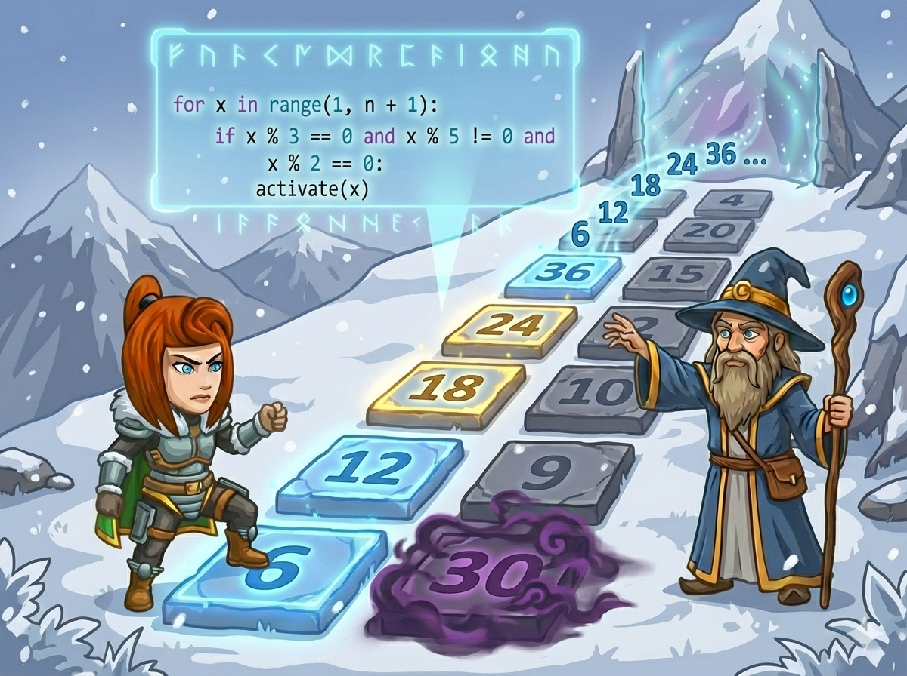

在雪山之巅，英雄需要点亮一串特定的“护符数字”才能打开结界。 这些数字必须非常“强”且“干净”，同时满足三个条件：
👉 任务： 输入一个数字 n，找出 1 到 n 之间所有满足条件的数字，用空格隔开。
我们要找符合条件的数字。如果不加思考，我们要检查 1, 2, 3, 4... n 所有的数。
剩下的两个条件写在 if 里：
1. i % 3 == 0 (被3整除)
2. i % 5 != 0 (不被5整除)
用 && 连接它们。
在 range(start, stop, step) 中：
设定 start=2，step=2。
这样循环变量 i 就会自动变成 2, 4, 6, 8... 效率翻倍！
利用 i += 2 只遍历偶数，并用 bool 变量控制空格。
#include <iostream> using namespace std; int main() { int n; cin >> n; bool first = true; // 用来控制空格 // 优化：从 2 开始，每次加 2，只看偶数 for (int i = 2; i <= n; i += 2) { // 剩下的条件：能被3整除 且 不能被5整除 if (i % 3 == 0 && i % 5 != 0) { // 如果不是第一个，先输出空格 if (!first) { cout << " "; } cout << i; first = false; // 标记已经输出过数字了 } } return 0; }
使用列表收集答案，配合 range 的步长参数。
n = int(input()) ans = [] # 存答案的列表 # 优化：从 2 开始，步长为 2，只看偶数 for i in range(2, n + 1, 2): // 剩下的条件：能被3整除 and 不能被5整除 if i % 3 == 0 and i % 5 != 0: ans.append(i) # 用 * 号拆包输出，自带空格分隔 print(*ans)